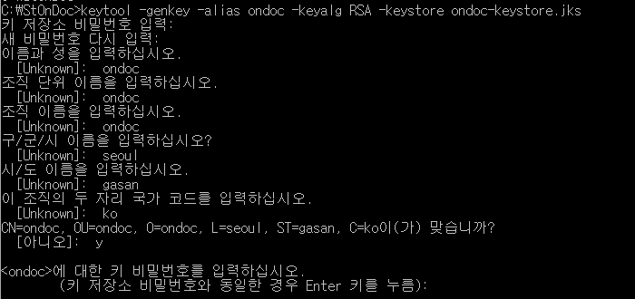
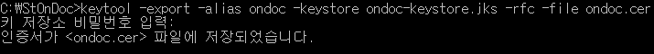
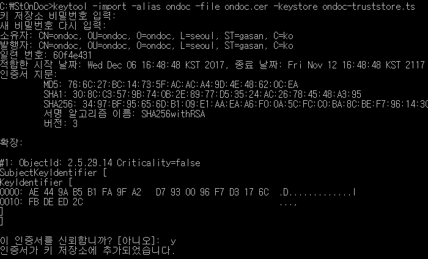
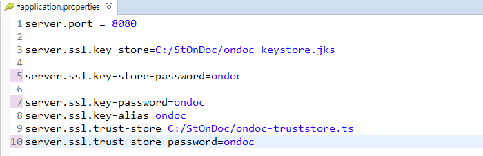
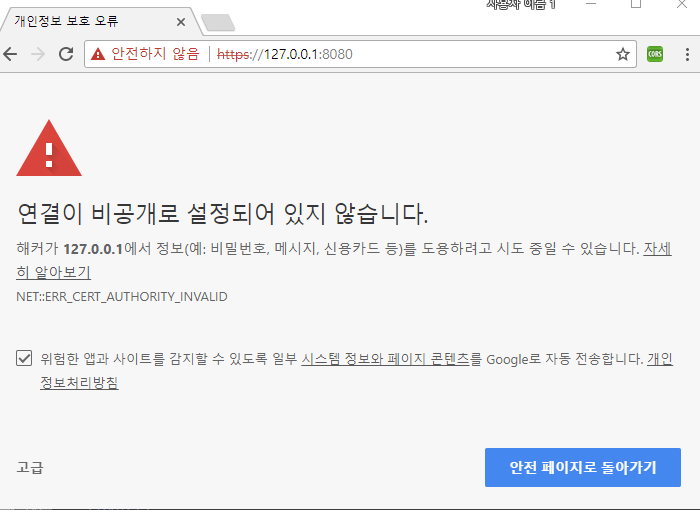

keystore 생성

keytool -genkey -alias ondoc -keyalg RSA -keystore ondoc-keystore.jks
인증서 추출

keytool -export -alias ondoc -keystore ondoc-keystore.jks -rfc -file ondoc.cer
Trust-Store 생성

keytool -import -alias ondoc -file ondoc.cer -keystore ondoc-truststore.ts
String boot 환경 설정
server.ssl.key-store=C:/StOnDoc/ondoc-keystore.jks
server.ssl.key-store-password=ondoccrm
server.ssl.key-password=ondoccrm
server.ssl.key-alias=ondoc
server.ssl.trust-store=C:/StOnDoc/ondoc-truststore.ts
server.ssl.trust-store-password=ondoccrm

